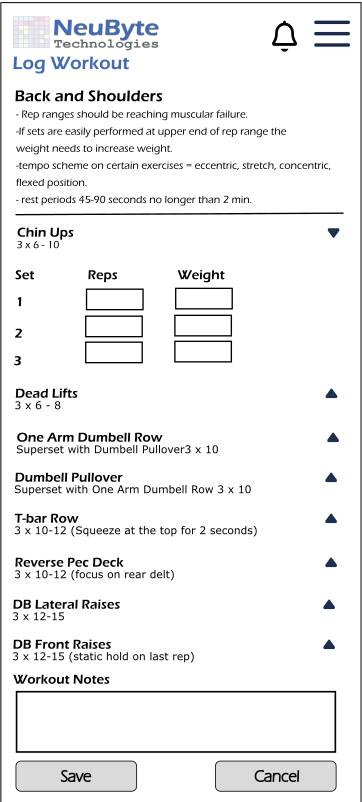

- App fetches the workout structure for the selected day:
- Exercises
- Expected number of sets per exercise
- Exercise type (strength, timed, bodyweight, distance, etc.)
- UI displays skeleton loaders until data is returned.
- Each exercise loads in a collapsed state by default.
-
- When the data is ready:
- Pre‑populate exactly the number of sets defined by the program.
- No additional sets may be added.
- No sets may be removed.
- Set rows remain hidden until the user expands the exercise.
Exercise Expansion / Collapse
- Collapsed State (default):
- Shows: Exercise Name, chevron icon, and summary (e.g., “3 sets”).
- Hides: All set rows and input fields.
- Expanded State:
- Shows all program‑defined set rows.
- Shows the appropriate input fields for each set.
- Tapping the exercise header toggles between expanded and collapsed.
- Multiple exercises may be expanded simultaneously (unless you prefer single‑expand behavior).
Dynamic Field Rendering (Based on Exercise Type)
Strength/Bodyweight Exercise
- Show: Reps, Weight
- Hide: Duration, Distance
Timed Exercise
- Show: Duration
- Hide: Reps, Weight
Distance Exercise
- Show: Distance, Duration
- Hide: Reps, Weight
Rule
Only fields relevant to the exercise type are rendered.
Hidden fields do not appear in the DOM and are not validated.
Set Row Behavior
The number of set rows is fixed based on the program.
User cannot:
- Add sets
- Remove sets
- Change the number of sets
Each set row includes:
- Set number (1, 2, 3…)
- Relevant input fields (based on exercise type)
Validation Rules
Validation occurs:
- On blur (field loses focus)
- On Save Workout button tap
Strength/ Bodyweight
- Reps > 0
- Weight ≥ 0 (if applicable)
Timed
Distance
- Distance > 0
- Duration > 0 (if required)
General
- All program‑defined sets must have valid entries.
- Empty sets are not allowed because the program requires them.
Inline Error Behavior
- Errors appear directly under the field.
- Errors clear automatically when the user corrects the value.
Examples:
- “Reps must be greater than zero.”
- “Duration is required for timed exercises.”
- “Weight cannot be negative.”
Global Error Banner
- Displayed only when:
- Save operation fails (network/server error)/
-
- Workout structure cannot be loaded
- Uses global pattern UIS‑ERR‑01.
Save Button Behavior
- Enabled only when:
- All required fields across all sets are valid
- No inline errors are present
- On tap:
- Validate all fields
- Submit workout log
- On success:
- Show toast: “Workout logged”
- Navigate to Dashboard
- On failure:
Cancel Behavior
- Discards all changes.
- Returns user to Workout Detail (UIS‑PROG‑01).
- No confirmation modal required.
6.11.2.5 Accessibility Requirements
- All form fields keyboard navigable
- Labels programmatically associated with inputs
- Inline errors announced via ARIA live region
- Add Set button must have descriptive ARIA label
- Minimum tap targets (44–48px)
- Screen reader announces: “Log Workout screen” on load
6.11.3 Related Requirements
BR LW 01 through BR LW 15 BR DASH xx (Recent Activity integration) FS LW xx (Workout logging functional rules)
6.11.4 Wire Frame Reference
UIS-WP-01
6.11.5 User Interface Design
6.11.5.1 Log Workout
